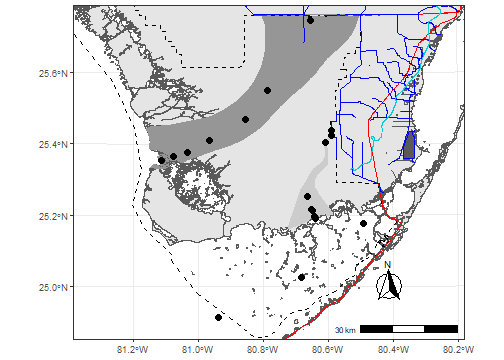

Introduction
As more and more spatial data is becoming available this package was intended to be a single source of general spatial data inspired by the Florida Coastal Everglades Long Term Ecological Research Site (FCE LTER) study area map repository.
Citing package
citation('EVERSpatDat')
##
## To cite package 'EVERSpatDat' in publications use:
##
## Paul Julian (2024). EVERSpatDat: Everglades Spatial Data. R package
## version 0.1.0. https://github.com/SwampThingPaul/EVERSpatDat
##
## A BibTeX entry for LaTeX users is
##
## @Manual{,
## title = {EVERSpatDat: Everglades Spatial Data},
## author = {Paul Julian},
## year = {2024},
## note = {R package version 0.1.0},
## url = {https://github.com/SwampThingPaul/EVERSpatDat},
## }Installation
Development version can be installed from this repo using:
install.packages("devtools");# if you do not have it installed on your PC
devtools::install_github("SwampThingPaul/EVERSpatDat")Currently there are no plans to send ths package to CRAN. However, in the future that could change.
List of Spatial Data
datalist<-data(package = "EVERSpatDat"); # see a list of the dataset| Item | Title |
|---|---|
| BBSEERBound | Biscayne Bay and Southeastern Everglades Ecosystem Restoration Project Boundary |
| CEPP | Central Everglades Planning |
| CSSSSubpops | Cape Sable Seaside Sparrow Subpopulations |
| EvPA | Everglades Protection Area Boundary |
| FCELTER_sites | FCE LTER long-term monitoring sites |
| FWCShore_clip | Florida Shoreline 1:12000 |
| LOK | Generalized Lake Okeechobee Boundary |
| LOSOM | Lake Okeechobee System Operating Manual |
| LOWRP | Lake Okeechobee Watershed Restoration Project |
| SFWMD_Projects | South Florida Water Management District Projects |
| SaltExtent | Inland Extent of Saltwater (2018) |
| TTBridge | Tamiami Trail Bridges |
| TribalAreas | Florida Tribal Areas |
| US41_US1 | Major Roads for FCE LTER |
| WCAs | SFWMD Water Conservation Areas |
| WERPBound | Western Everglades Restoration Project Boundary |
| canals | South Florida Water Management District Canals |
| eaa | SFWMD Everglades Agricultural Area (EAA) Boundary |
| lakes | Lakes |
| nps_clipped | National Park Service areas in Everglades region |
| refuges_clipped | US Fish and Wildlife Service Refuges |
| sfwmd_bound | South Florida Water Management District Boundary |
| sloughs | General delineation of Shark River and Taylor Sloughs within Everglades National Park |
Example
library(sf)
library(tmap)
library(EVERSpatDat)
utm17<-st_crs("EPSG:26917");# CRS for NAD83 UTM17
tmap_mode("plot")
# Load Package Data
data(list=datalist$results[,3]);# Loads all the data in the package
ENP <- subset(nps_clipped, UNIT_CODE=="EVER"); # Subsets for just ENPtmap
Using the FCE LTER /r_scripts/FCE_map_grayscale_base.R as an example.
bbox.lims<-st_bbox(c(xmin=461316,xmax=582555,ymin=2748545,ymax=2852277),crs=utm17)
main.map <- tm_shape(FWCShore_clip,projection = 26917,ylim=bbox.lims[c(2,4)],xlim=bbox.lims[c(1,3)]) +
tm_polygons(col="#f0f0f0",border.col="#525252") +
tm_shape(sloughs[2,]) +
tm_polygons(col = "#969696",border.col = "#969696") +
tm_add_legend(type = "fill",col = "#969696",border.col = "#969696",
labels = "Shark River Slough",z = 5 # position in the legend
) +
tm_shape(sloughs[1,]) +
tm_polygons(col = "#cccccc",border.col = "#cccccc") +
tm_add_legend(type = "fill", col = "#cccccc",border.col = "#cccccc",
labels = "Taylor Slough",z = 4) +
tm_shape(ENP) +
tm_borders(col = "#525252",lwd = 1.5,lty = "dashed") +
tm_add_legend(type = "line",lwd = 1.5,lty = "dashed",col = "#525252",
labels = "Everglades National Park",z = 6) +
tm_shape(US41_US1) +
tm_lines(col = "#cc0000",lwd = 1.5,lty = "solid") +
tm_add_legend(type = "line", lwd = 1.5,col = "#cc0000",
labels = "US Highways",z = 2) +
tm_shape(TTBridge) +
tm_lines(col = "#ffff00",lwd = 8,lty = "solid") +
tm_add_legend(type = "line", lwd = 6, col = "#ffff00",
labels = "Tamiami Trail bridges",z = 7) +
tm_shape(canals) +
tm_lines(col = "#0000cc",lwd = 0.75,lty = "solid") +
tm_add_legend(type = "line", lwd = 0.75, col = "#0000cc",
labels = "Canals",z = 1) +
tm_shape(SaltExtent) +
tm_lines(col = "#00cccc",lwd = 3,lty = "solid") +
tm_add_legend(type = "line", lwd = 3, col = "#00cccc",
labels = "Saltwater intrusion 2018",z = 9) +
tm_shape(FCELTER_sites) +
tm_symbols(size=.25,shape = 19,col = "#000000")
map.leg <- tm_graticules(lines = FALSE,labels.size = 0.8) +
tm_add_legend(
type = "symbol",
size=.25,
shape = 19,
col = "#000000",
labels = "FCE sites",
z = 0
) +
tm_compass(
north = 0,
text.size = 1.2,
show.labels = 1,
cardinal.directions = c("N", "E", "S", "W"),
lwd = 1) +
tm_scale_bar(
width = 0.15,
text.size = 0.8,
color.dark = "black",
color.light = "white",
lwd = 1) +
tm_layout(
bg.color = "#ffffff",
outer.margins = 0.001,
legend.show = TRUE,
legend.text.size = 0.9,
legend.position = c("left","bottom")
)
main.map+map.leg
sf
Or if you prefer the sf flavor.
NOTE: The code below contains the native R pipe (|>, similar to the tidyverse %>% but no extra packages needed). I don’t usually use pipes to tie functions together but recently I’ve began to experiment to consolidate code. In the code block below I proivde a pipe and non-pipe example for those not comfortable or used to piping functions together (its new for me too).
## Pipe version
states.shp=USAboundaries::us_states(resolution ="low")|>
as("Spatial")|>
st_as_sf()|>
st_transform(utm17)|>
subset(stusps%in%c("FL","GA","AL"))
## Non-pipe version
states.shp <- USAboundaries::us_states(resolution ="low")
states.shp <- as(states.shp,"Spatial")
states.shp <- st_as_sf(states.shp)
states.shp <- st_transform(states.shp,utm17)
states.shp <- subset(states.shp,stusps%in%c("FL","GA","AL"))
library(mapmisc)
library(USAboundaries)
states.shp <- USAboundaries::us_states(resolution ="low")|>
as("Spatial")|>
st_as_sf()|>
st_transform(utm17)|>
subset(stusps%in%c("FL","GA","AL"))
# bbox.lims=st_bbox(sloughs)
bbox.lims<-st_bbox(c(xmin=461316,xmax=582555,ymin=2748545,ymax=2852277),crs=utm17)
# Turn bounding bbox.lims into a polygon for plotting
AOI.poly <- raster::extent(bbox.lims)|>
as("SpatialPolygons")|>
st_as_sf()
st_crs(AOI.poly) = utm17
par(family="serif",mar=c(2,3,0.5,0.5),oma=c(1,1,0.1,0.1),plt=c(0.12,0.95,0.05,0.95));
layout(matrix(c(1:2),1,2),widths=c(1,0.5))
# Main plot
plot(st_geometry(FWCShore_clip),
ylim=bbox.lims[c(2,4)],xlim=bbox.lims[c(1,3)],
border="grey60",col = "grey90",
graticule=st_crs("EPSG:4326"),
lon=seq(-81.4,-80.2,0.3),lat=seq(24.8,25.8,0.3),
axes=T,las=1,mgp=c(0,0.6,0))
plot(st_geometry(sloughs),add=T,col=c("grey80","grey59"),border=NA)
plot(st_geometry(ENP),add=T,lty=2,col=NA)
plot(st_geometry(US41_US1),add=T,col="red",lwd=1)
plot(st_geometry(canals),add=T,col="blue",lwd=0.75)
plot(st_geometry(TTBridge),add=T,col="yellow",lwd=4,lend=2)
plot(st_geometry(SaltExtent),add=T,col="darkturquoise",lwd=3)
plot(st_geometry(FCELTER_sites),add=T,pch=19,cex=1.25)
mapmisc::scaleBar(crs=FWCShore_clip,"bottomright",bty="n",cex=1,seg.len=4,outer=F)
box(lwd=1)
## Inset map
# idea from https://stackoverflow.com/a/21570835/5213091
opar <- par(plt=c(0.12,0.4,0.7,0.95),new=T)
bbox.lims<-st_bbox(subset(states.shp,stusps=="FL"))
plot.new()
plot(st_geometry(states.shp),col="grey60",lwd=0.5,
ylim=bbox.lims[c(2,4)],xlim=bbox.lims[c(1,3)])
plot(st_geometry(AOI.poly),add=T,col=NA,border="red",lty=1,lwd=2)
box(lwd=1)
# if you wanted it on the side with the legend -- specify layout(matrix(c(1,1,2:3),2,2),widths=c(1,0.5))
# par(mar=c(0.5,0.5,0.5,0.5))
# plot(st_geometry(states.shp),col="grey60",lwd=0.5)
# plot(st_geometry(AOI.poly),add=T,col=NA,border="red",lty=2,lwd=2)
# box(lwd=1)
## Legend
par(mar=c(0.5,0.2,0.5,0.1))
plot(0:1,0:1,ann=F,axes=F,type="n")
legend("center",
legend=c("FCE Sites",
"Canals","US Highways",
"Taylor Slough","Shark River Slough",
"Everglades National Park",
"Tamiami Trail Bridges",
"Saltwater Intrusions (2018)"),
pch=c(21,NA,NA,22,22,NA,NA,NA),
pt.bg=c("black",NA,NA,"grey80","grey59",NA,NA,NA),
lty=c(NA,1,1,NA,NA,2,1,1),lwd=c(NA,1.5,1,NA,NA,1,4,2),
col=c("black","blue","red",NA,NA,"black","yellow","darkturquoise"),
pt.cex=2,ncol=1,cex=0.8,bty="n",y.intersp=1.2,x.intersp=0.75,xpd=NA,xjust=0.5,yjust=0.5)
ggplot2
For those that like ggplot style.
library(ggplot2)
library(ggspatial)
theme_set(theme_bw())
bbox.lims<-st_bbox(c(xmin=461316,xmax=582555,ymin=2748545,ymax=2852277),crs=utm17)
ggplot(data = FWCShore_clip,col = "grey90",border="grey60") +
geom_sf() +
layer_spatial(sloughs,aes(col=LTER_SLOUG),fill=c("grey80","grey59"),col=NA) +
layer_spatial(ENP,fill=NA,col="black",linetype=2,size=2) +
layer_spatial(US41_US1,fill=NA,col="red",linetype=1,size=2) +
layer_spatial(canals,fill=NA,col="blue",linetype=1,size=2) +
layer_spatial(TTBridge,fill=NA,col="yellow",linetype=1,size=4) +
layer_spatial(SaltExtent,fill=NA,col="darkturquoise",linetype=1,size=3) +
layer_spatial(FCELTER_sites,shape=19,size=3) +
annotation_scale(location = "br", width_hint = 0.25) +
annotation_north_arrow(location = "br", which_north = "true",
pad_x = unit(0.75, "in"), pad_y = unit(0.5, "in"),
style = north_arrow_fancy_orienteering) +
coord_sf(ylim=bbox.lims[c(2,4)],xlim=bbox.lims[c(1,3)], expand = FALSE,crs=st_crs(26917))